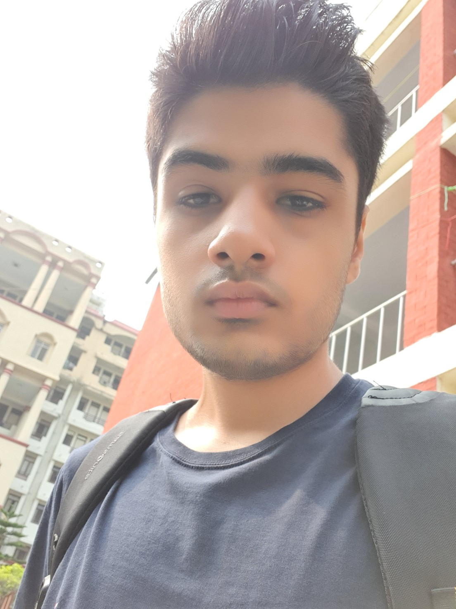
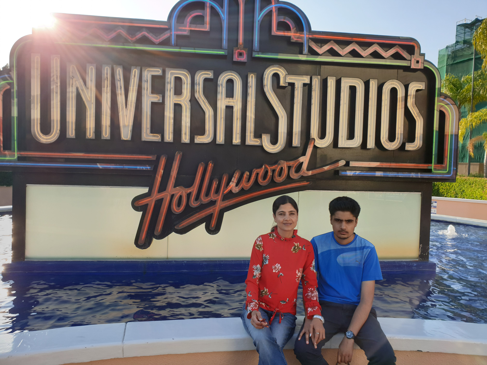
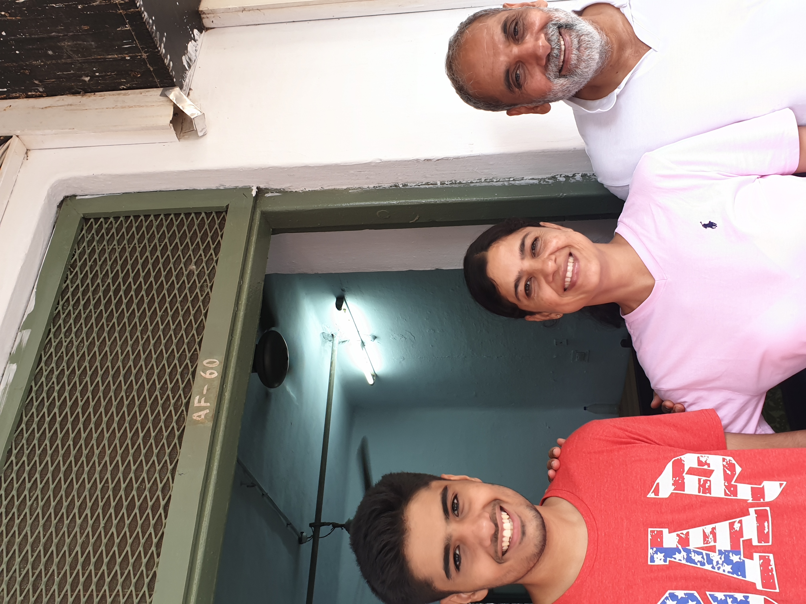

About Me
Educational Background
Project Experiences
Learning Interests
Blogs
Hobbies
Some Memories
Useful Weblinks
Contact Details
About Me

Hey I'm Aryan Yadav, a student in IIT Roorkee pursuing a 4 year course in computer science and enginnering.I am 18 years old
and in my first year of college.I was born on 27th April 2001 in New Delhi, India.My family moved to Gurgaon, Haryana when I was
2 years old and I lived their for the next 16 years.I have an older brother, who graduated from college this year and is currently
working as a software developer for Dematic in Austin, Texas. My father is a chief engineer in MTNL. My mother is a physics proffessor
in Manesar Polytechnic college.
You can connect with me on social media:
Facebook
Twitter
Gmail
Educational Background
- Age 3-6:Pallavan play school,Gurgaon
- Age 6-14:Shri Ram Aravali School, Gurgaon
- Age 14-16:Delhi Public School, Gurgaon
- Age 16-18:Sant Gyaneshwar Model School, New Delhi
- Age 18-present:IIT Roorkee CSE 1st year
- IIT JEE coaching:FIITJEE Gurgaon
Project Experiences
- As a part of a school project, visited Ullhari village in Rajasthan. Stayed there for 1 week, learning about the lives of people
in rural India and also helped them learn about technology.
- Currently working on a project for my environmental studies class
- Created a word document, describing working of various components of a pc
Learning Interests
Some of the stuff I want to learn in college:
- Coding(Why I joined CSE)
- To learn to play more sports
- App development
- Learning things with real world applications rather than theoretical things taught in JEE syllabus
Blogs
Some blogs I find interesting and love to read:
- Gameranx:Gameranx is a blog about video games, they write about game news,reviews,interviews with developers and other interesting things.
They also have a youtube channel with over 5 million subscribers
- MMA on point:It's a blog about MMA news, interviews, top 10 lists etc.They also have a youtube channel with over 2 million subscribers
- Bleacher report:A blog for all sorts of sports news and statistics
Hobbies
Some of my hobbies are:
- Swimming: I learned swimming when I was 11 years old and have loved it ever since. I have joined
NSO swimming in IIT Roorkee and am also a part of the swimming team.I won a silver medal in 1500m freestyle event in the IIT Roorkee aquatics meet
- Playing video games: I really enjoy playing video games. I own a xbox one console and a gaming PC which I use to play video games.
- Reading books: I love reading boks, my favourite genres are mystrey and fantasy. Some of my favourite authors are:Agatha Christie,
Sydney Sheldon, Stephen King, George RR Martin.
- MMA:I love watching MMA(Mixed Martial Arts) as as sport. I have been watching for about 2 years but in the last 4-5 months I have gotten
really interested in it.My favourite promotion is the UFC.
Some Memories

Visiting Jaipur with my family in 2015

Kayaking in lake Austin, Austin, Texas with my mom and brother.

At universal studios

First day at IIT Roorkee

IIT Roorkee aquatics meet 2019
Useful Weblinks
College address:AF-060, Rajendra Bhawan, IIT Roorkee, Roorkee-247667, Uttrakhand.
Home address:E-9, Greenwoods city, Sector-46, Gurgaon-122003, Haryana.
Contact number:+919643368007
College Email id:aryan_y@cs.iitr.ac.in
Personal Email id:aryan.yadav1514@gmail.com